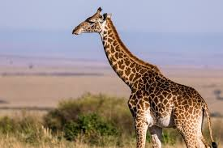
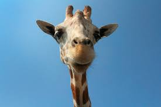

Girafa
As girafas são os animais terrestres mais altos do mundo, conhecidas por seus longos pescoços e pernas. Nativas das savanas e florestas da África, essas majestosas criaturas têm adaptações únicas que as ajudam a alcançar folhas e brotos em árvores altas, principalmente das espécies de acácia.
A dieta das girafas é predominantemente herbívora, composta principalmente de folhas, flores e frutos. Elas têm uma língua longa e preênsil, que pode medir até 45 centímetros, permitindo que se alimentem de maneira eficiente. As girafas também são animais sociais, vivendo em grupos soltos, onde podem se relacionar e se comunicar por meio de sons, gestos e posturas.
Apesar de sua aparência imponente, as girafas enfrentam ameaças como a perda de habitat e a caça furtiva, tornando a conservação dessa espécie fundamental para a biodiversidade das savanas africanas.